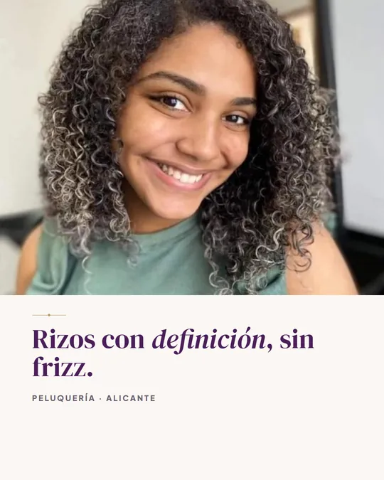
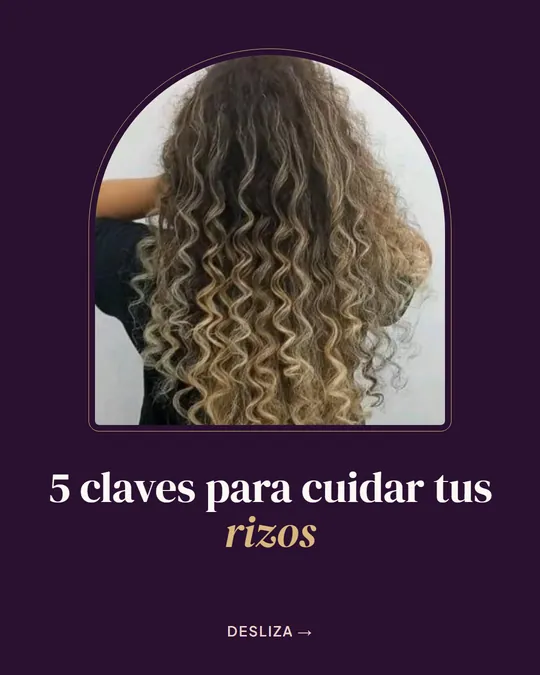

Juliana Oliveira · Peluquera en Alicante
Bastidores
Aqui fica tudo o que já está pronto, num lugar só. As páginas estão fora do Google (noindex). Atualizado em 24/11/2026.
Versões do site
Cada uma congelada na sua pasta, com a etiqueta «Estás en la vX» e as setas para a anterior e a próxima. O que mudou em cada uma: /versoes/.
Design System V0
Reúne tokens, o roxo refeito com o contraste medido, tipografia, componentes, o antes/depois acessível e o CTA de WhatsApp. Abrir o Design System
Capas de destaque do Instagram
Nove ícones; as capas 1080×1920 estão no painel.
- Cortes
- Color
- Mechas
- Alisado
- Rizos
- Antes y después
- Sobre mí
- Dónde
- Citas
Prévias anteriores (continuam no ar)
Fotos
Por enquanto o site usa só as fotos que já existiam. O hero e a foto de costas do final são o padrão. Uma foto nova só entra se chegar a esse nível. Resultado da triagem: veja o progresso, passo 3.
Ainda falta confirmar
- O número de WhatsApp definitivo. O de agora é provisório e fica em uma linha só,
WA=. [confirmar] - A autorização das clientes que aparecem nos posts e nos antes/depois. [confirmar]
- O domínio final; hoje está
[dominio]. [confirmar] - Tudo aqui está fora do Google (noindex) e não foi mandado para ninguém.
Grade 3×4 do Instagram (proposta)
São os posts que já estão prontos, mostrados a 90% da largura. A primeira linha tem os 3 fixados. Os posts do curso ficaram fora desta página pública.
 Fijado: presentación
Fijado: presentación Fijado: servicios
Fijado: servicios Fijado: pedir cita
Fijado: pedir cita



